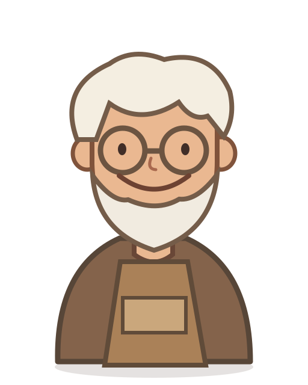

からくり工房
ステージ
設定
からくり工房
道具を組み合わせて、球をゴールへ。
工房へ入る
遊び方

ステージを選ぶ
達成状況
0.00 秒
前回の軌跡（予測ではありません）
道具箱
配置したパーツ
横
縦
ここに置く
←
↑
↓
→
↶
↷
削除
元に戻す
配置をリセット
ベスト配置
前回の軌跡
ヒント
確定
取り消す
実験開始
実験中
一時停止
明示的に再開
中止
もう一度設計
次のステージ
ステージへ
前回の軌跡
工房を起動できませんでした。ページを読み直してください。